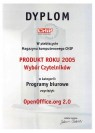
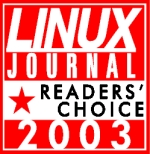
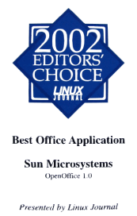
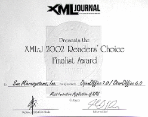

OpenOffice Awards
Welcome to the OpenOffice Awards page.
If you know of a publication, magazine, institution, organisation or other body which has given OpenOffice an award recently, and you would like to let more people know about it, send us an email with all the details to: marketing@openoffice.apache.org.
Award from GIGA.de
GIGA.de and their users rated OpenOffice as #25 in Germany with >20 Mio. visits per month.
CHIP Top-Downloads of the Year - January 2014
CHIP Online reported their Top 100 downloads from 2013, including proprietary and open source downloads. We were #9 overall with over 4.3 million downloads from their website..
InfoWorld's Bossie (Best Of Open Source) Awards - September 2013
We won in the category of Best Open Source Desktop and Mobile Software . The citation said, "OpenOffice 4.0 proved to be a solid step forward from its predecessors -- and a good sign that the Apache Foundation's stewardship was all for the better"
About.com Readers' Choice Award - April 2013
 We won in the category of Favorite Business Office Software.
We won in the category of Favorite Business Office Software.
InfoWorld's Bossie (Best Of Open Source) Awards - September 2012
CHIP Online Top Download Award - December 2012
A Top-10 performance for OpenOffice, made more impressive by the fact that this was looking at downloads of both open source and proprietary software packages.
InfoWorld's Bossie (Best Of Open Source) Awards - September 2012
We received two Bossie Awards in 2012, both in the Desktop category.
The first award was for the Apache OpenOffice application and the second was for the OpenOffice Templates repository.
UpdateStar Editor's Choice 2012 Award - July 2012
The UpdateStar Editor's Choice Award is given only to a small group of top software products leading in their field.
PC för Alla, Number 4 on Top 20 List - July 2012
PC för Alla, Sweden's largest computer magazine, awarded us a medal for being on their Top20 List for free downloads.
Linux Journal 2011 Readers' Choice Award for Best Single Office Program
Award given to OOWriter - see the full article.
Linux Journal 2010 Readers' Choice Award for Best Office Suite as well as Best Single Office Program
Two awards: OpenOffice.org as Best Office Suite and Writer as Best Single Office Program. - see the full article.
Linux Journal 2009 Readers' Choice Award for Favorite Office Program
OpenOffice.org, bolstered no doubt by its recent 3.0 release, retains its crown as your Favorite Office Program with the same share of your vote as last year, 85%. - see the full article.
Computerbild Top 250 Download Award - January 2009
 The German magazine Computerbild awarded us their "Top 250
Download Award" in January. They offer OpenOffice.org for download on their
website and it has been one of the most downloaded programs in their
repository. Thanks, folks!
The German magazine Computerbild awarded us their "Top 250
Download Award" in January. They offer OpenOffice.org for download on their
website and it has been one of the most downloaded programs in their
repository. Thanks, folks!
SOHO AWARDS 2008 for OpenOffice.org
OpenOffice.org was awarded the SOHO AWARDS 2008 yesterday. Congratulations to this effort!
SourceForge.net 2008 Community Choice Awards
OpenOffice.org was awarded three prizes in the SourceForge.net 2008 Community Choice Awards! Thanks to all our users for their votes!
IT Reviews Recommended - May 2008
OpenOffice.org - OpenOffice.org 2.4 review "The maturity of OpenOffice is fast winning over many of those still deep-rooted in a Microsoft Office way of working, and while this latest release isn't likely to tip too many more over the edge, it's a further move forward in the quest to be accepted as the legitimate alternative that it already is."
CHIP Download of the Day
OpenOffice.org wins Download of the Day.
"CHIP Online is one of the leading computer websites in Europe with more than 30 million users and 200 million page impressions per month. We are pleased to inform you, that your software “OpenOffice” is the Download of the day 27/03/2008"
2008 Duke's Choice Award
OpenOffice.org wins the 2008 Duke's Choice Award for Fans' Choice.
"The Duke's Choice Awards program recognizes the year's most influential Java technology-based applications submitted by developers and companies around the world. The winners are chosen by Vice President and Sun Fellow James Gosling, along with a panel of Java technology experts at Sun."
Linux Journal's 2008 Readers' Choice Award - "Favorite Office Program"
"OpenOffice.org garnered a whopping 85% of the votes to win Favorite Office Program, while competitors AbiWord and KOffice squeaked in a barely perceptible 3% each. Nor did EIOffice, a program that has received much praise in our pages in the past, register more than a few votes. OpenOffice.org has become the de facto default office suite for Linux." Linux Journal June 2008
IT Reviews Recommended - June 2007
OpenOffice.org - OpenOffice.org 2.2 review "This is a fully functioning office suite that's compatible with Microsoft Office files, consisting of a word processor (Writer), a spreadsheet (Calc) and presentation (Impress) programs, along with a database (Base) and a vector drawing tool (Draw) ... There might not be any such thing as a free lunch, but there most certainly is a free office suite thanks to this excellent effort. In terms of functionality, version 2.2 polishes the various programs up nicely, and OpenOffice really is up there with the big players."
CHIP Product of the Year 2005 Polish Readers' Choice - February, 2006
 "OpenOffice.org 2.0 has won the first prize in category Office applications to loud applause from the gathered prize winners. OpenOffice version 2.0 has won with an extra reserves of votes over other office applications in the famous computer magazine CHIP contest - prestigious Readers' Choice. Openoffice.org provides access to every functionality thanks to open API components and the pioneer, open, XML based file format."
{kind=link}
PC Pro Labs Winner - Office Suites, December 2004
Verdict: "The best all-round office suite is also the cheapest. With excellent Microsoft compatibility, a consistent interface and a good network of ad-hoc support, this is the king of the business tools."
Rating: 
"We should point out here that PC Pro isn't throwing its weight
behind OpenOffice purely by dint of the fact that it's free. We firmly
stand by our assertion that it offers a more compelling proposition than
Microsoft Office; its cross-platform support and the speed at which it's
being developed leads us to believe that, together with StarOffice, it
could - nay should - become the dominant force in office suites within the
next three to five years.
"If you don't want to be left behind, now could be the time to switch."
OSDir.com—Editor's Choice Awards in Open Source, Best Application - Overall Desktop App
"There's a lot of talk about putting Linux on the Desktop across the enterprise next year. I'll give you one guess why this can be done?"
Best of Platform - Mac and Windows
"Picking any other application for this category is simply negligent. No other project is making inroads with other operating systems (outside of Linux) like the big OO."
Cybia - Reviews—"Best of the Best" Awards, Utility and Non-Graphics
"All the power of an MS-compatible office suite without the high price tag.
"For those of you who are familiar with the MS Office suite but can't justify the price tag, then take a look at this free alternative ...
"OpenOffice is available as a free (but large) download or you can often purchase it on CD from a distributor for a nominal fee. There are versions for most Operating Systems.
"The suite consists of several apps, the most useful probably being the word processor which is fantastic! The HTML editor is also handy and the drawing package pretty decent too.
"A quality product that boasts plenty of powerful features. You shouldn't need much more than this for all your office needs!"
Open for Business—Open Choice Awards 2003, Best Office Suite
September 20, 2003
"Choosing the best of the best in different sectors of GNU/Linux products and services is not an easy task. In many cases, there was more than one contender that was worthy of an award in any given category. However, we attempted to select the easiest to use, most robust, most promising, and - when possible - most free (as in freedom) products for the Open Choice Awards 2003.
"For years, GNU/Linux and other UNIX-like operating systems suffered from poor, buggy office suites. Fortunately, OpenOffice.org has fixed much of this as Sun Microsystems and others work to make it (and its proprietary variant, StarOffice) the best office suite available. In the most recent releases, OpenOffice features improved Microsoft Office file format compatibility, the ability to export to useful internet formats such as Macromedia Flash for Impress presentations and Draw drawings, and dramatically faster startup. Perhaps most exciting is that the suite is now truly able to be a universal office suite in a heterogeneous office environment, with support for UNIX and UNIX-like systems such as GNU/Linux as well as Windows and Mac OS X."
Linux Journal—Reader's Choice Awards 2003, Favorite Office Program
 Linux Journal, a publication of Specialized Systems Consultants, Inc. (SSC), has announced the winners of the 2003 Readers' Choice Awards. Over 7,500 readers visited the Linux Journal web site and voted on their top choices in 28 categories.
"Linux Journal's annual Readers' Choice Awards allow members of the Linux community to pick their favorites in a number of categories, write-ins are accepted. Voting in the 2003 Readers' Choice Awards took place between June 30 and July 25, 2003, and was open to everyone. More information about the awards is also available in the November issue of Linux Journal, #115."
Linux Journal—Editors' Choice 2002, Best Office Application
"Linux Journal's Editors' Choice Awards are well-known as the premiere forum recognizing outstanding product developments and achievements in the Linux market.
"A panel of more than 50 distinguished Linux experts was assembled to nominate products for the awards, which were then sent to the Linux Journal editors who chose the final winners.
"Featured in the September 2002 issue of Linux Journal, the winners of the Best Office Application award were Sun Microsystems for OpenOffice.org 1.0."
XML Journal—XML-J 2002 Readers' Choice Finalist Award, Most Innovative Application of XML
San Jose, CA, September 30, 2002
 "SYS-CON Media announced today the results of its three annual awards programs: the fifth annual Java Developer's Journal Readers' Choice Awards; the third annual XML-Journal Readers' Choice Awards; and the first annual Web Services Journal Editor's Choice Awards. The finalists and the winners will be announced at the Web Services Edge 2002 West–International Web Services, Java, and XML Conference & Expo being held October 1-3 at the McEnery Convention Center in San Jose, California.
"Widely referred to as the 'Oscars of the Software Industry', the JDJ Readers' Choice Awards program has become the most respected industry competition of its kind.
"The full results of this year's JDJ voting will appear in the November 2002 issue of Java Developer's Journal. The JDJ polls were open for just under a year, from November 6, 2001, through September 23, 2002, and at least 30,000 Java Developer's Journal readers cast their votes. The total of award nominations also reached a new record high, with more than 180 companies nominating over 705 products in 29 different award categories—seven more categories than last year. Many of the new ones reflect emerging trends in the Java space, such as 'Best Wireless Java Application' and 'Best XML Tool'."
Monitor magazine—Best Product Award, InterINFOS Fair, Slovenia
Slovenia
"OpenOffice.org was awarded the Best Product award at the InterINFOS fair in Ljubljana, Slovenia, the nation's most important IT event. Each year, Monitor, the nation's leading IT magazine, selects among the exhibitors a product, which has been available on the market for no more than one year and which has created the most prominent and important appearance on the market. This year, the Best Product award was granted to OpenOffice.org.
"Says Monitor: 'We believe that the award went to the right hands. The winner is OpenOffice.org with a Slovenian translation, a project with its roots in the computing community rather than in a particular company. This is a precedent that will show the extent to which open source code can reach, and what can be expected from it in the future.'"
More here:
http://www.infomediji.si/s.nsf/vse/7F2CFA9AB0A6610CC1256C5A0062C864
Overview of OpenOffice.org:
http://www.infomediji.si/s.nsf/vse/
3774EBF6A3AD6859C1256C21003CB02D
Linux Format awards—Overall Winner, Readers' Choice, Category Best Business Software for OpenOffice.org
United Kingdom, April 23, 2002
On April 23 2002, Linux Format, the UK's best-selling Linux magazine, officially announced that "OpenOffice.org was the overall winner in the category Best Business Software in the Linux Format Awards 2001, as voted for by readers of the magazine and registered visitors to the site."